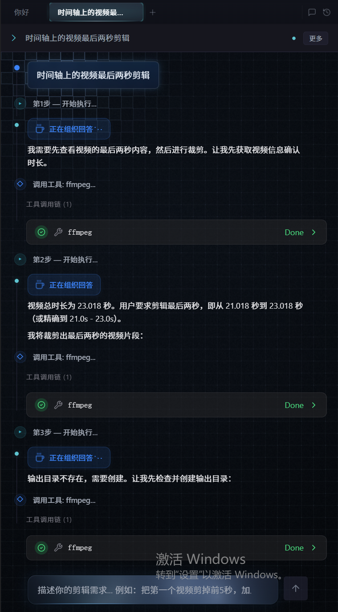
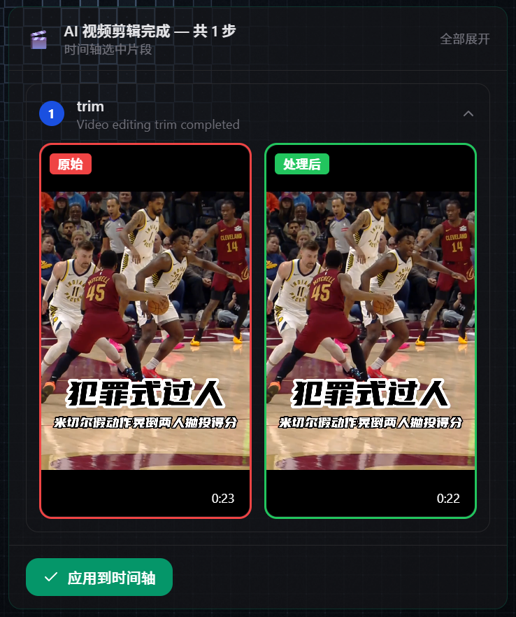
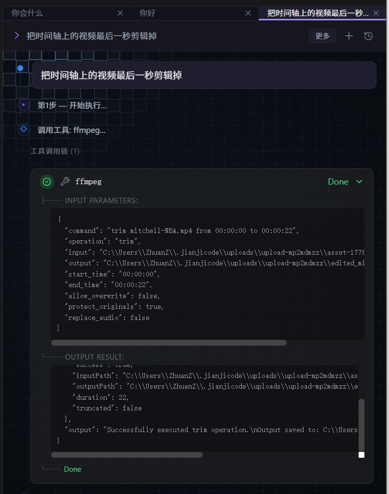
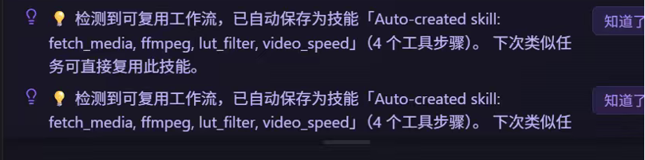
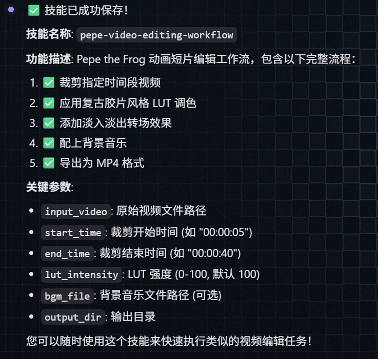
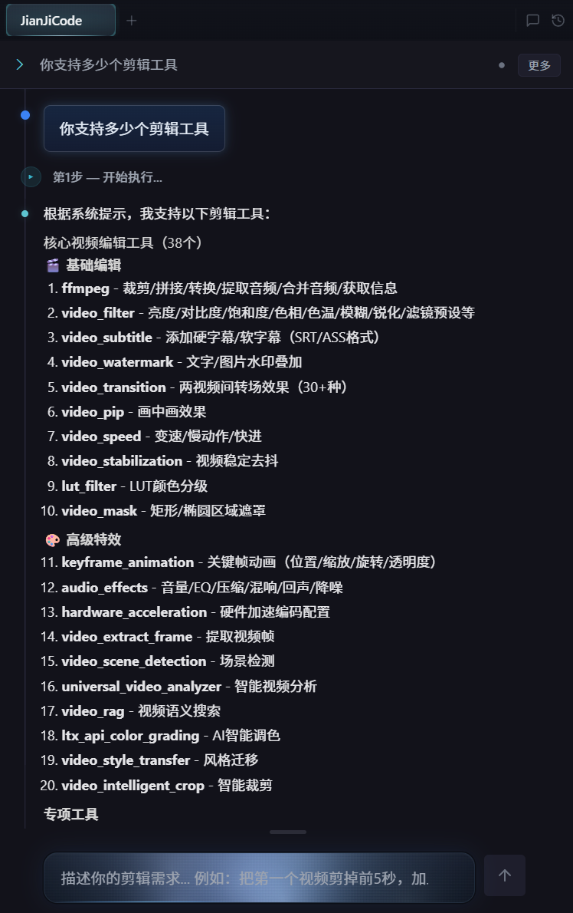

AI 驱动的智能视频剪辑平台
用自然语言描述，AI 帮你完成复杂剪辑。
你说，它做。
剪辑，从此像聊天一样简单。

简洁高效的创作空间
视频编辑器和 AI 助手并排站，不用来回切换
左边素材、中间画面、右边 AI——三个区域各干各的，互不打扰又随时联动。

一个极简的聊天框，承载着整个 AI 剪辑的入口。

从指令到成片，全流程可视化反馈
「告诉 AI '剪掉最后一秒'，3 秒后看到对比结果——这就是未来的剪辑方式。」

鼠标所到之处，宫格逐层点亮——AI 正在感知你的意图
「就像科幻电影里的全息界面——每一次移动，都被光 grid 实时感知」
从一句话到 FFmpeg 命令，每一步都看得见
「你说人话，AI 干脏活，代码自己跑——但每一行都给你看。」

每次剪辑都在训练你的专属 AI 助手
第一次教它"复古胶片风剪辑流程"，第二次直接说"用那个复古流程"——它懂。


从裁剪到AI调色，全覆盖
说人话，就能调专业工具。
内置 38个核心引擎：裁剪、转场、字幕、LUT、关键帧、AI调色、风格迁移、智能裁剪……基础到高级，一键匹配。
不用记参数，不用写命令。你说需求，系统自己组合工具链，生成并执行。
剪辑小白，也能调用专业级工作流。

AI 驱动的智能视频剪辑平台